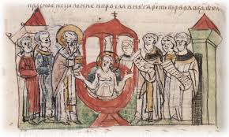
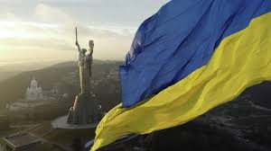

Хрещення Русі
Прийняття християнства князем Володимиром Великим, що стало цивілізаційним вибором для Київської Русі.
Ключові етапи становлення державності на одній шкалі.

Прийняття християнства князем Володимиром Великим, що стало цивілізаційним вибором для Київської Русі.

24 серпня 1991 року Верховна Рада УРСР ухвалила Акт проголошення незалежності України.